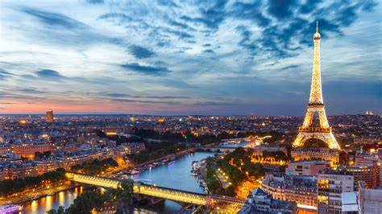
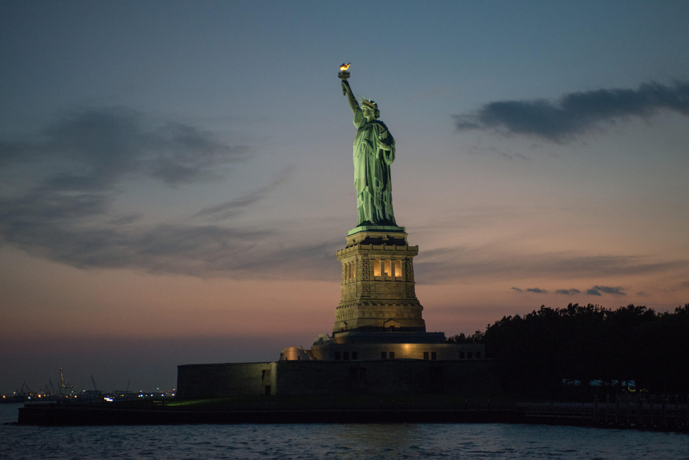

Capturing the Magic of Paris by Night
Date: July 25, 2024
Paris, often referred to as the City of Lights, truly lives up to its name after sunset. The enchanting glow of streetlights, the shimmering reflections on the Seine, and the twinkling of the Eiffel Tower make Paris at night a photographer's dream.
The Eiffel Tower: A Shimmering Jewel
The Eiffel Tower, an iconic symbol of Paris, becomes even more mesmerizing after dark. As the sun sets, the tower is adorned with golden lights that twinkle every hour, creating a magical ambiance. Capturing this spectacle from different vantage points around the city offers a unique perspective each time. The Trocadéro Gardens, the Seine River cruises, and the Champ de Mars are some of the best spots to witness and photograph this stunning display.
The Seine: Reflections and Romance
Strolling along the Seine River at night is a quintessential Parisian experience. The bridges, illuminated by ornate street lamps, cast beautiful reflections on the water's surface. A nighttime boat ride on the Bateaux Mouches provides a panoramic view of the illuminated landmarks, including Notre-Dame Cathedral, the Louvre, and Musée d'Orsay. The gentle rocking of the boat and the soft glow of the city lights create a romantic and serene atmosphere, perfect for capturing long exposure shots.
Montmartre: Artistic Allure
Montmartre, with its bohemian charm and artistic heritage, takes on a mystical quality at night. The narrow, winding streets, lined with cafes and art studios, are bathed in the soft glow of lamplight. The Sacré-Cœur Basilica, perched atop the highest point in Paris, offers a breathtaking view of the city skyline. As night falls, the basilica is illuminated, providing a stunning contrast against the dark sky. Exploring Montmartre's night scene with a camera in hand unveils countless opportunities for unique and captivating photographs.
The Champs-Élysées: Glamour and Glitz
The Champs-Élysées, one of the most famous avenues in the world, is a dazzling spectacle at night. The avenue is lined with luxury stores, theaters, and cafes, all brilliantly lit, creating a vibrant and lively atmosphere. At the western end of the Champs-Élysées, the Arc de Triomphe stands majestically, illuminated to highlight its intricate details. Photographing the bustling activity along the avenue, with the Arc de Triomphe as a backdrop, captures the essence of Parisian glamour.
Nightlife in Le Marais
Le Marais, known for its historic charm and trendy vibe, comes alive at night with a plethora of bars, cafes, and clubs. The narrow medieval streets are filled with the sounds of laughter and music, offering a dynamic and lively atmosphere. Photographers can capture the vibrant nightlife, the charming architecture, and the eclectic mix of people enjoying the evening.
Illuminating Liberty: Capturing the Statue of Liberty by Night
Date: July 26, 2024
The Statue of Liberty, a symbol of freedom and democracy, stands proudly in New York Harbor. As night falls, this iconic monument is bathed in a soft, radiant light, creating a breathtaking sight against the evening sky.
The Statue of Liberty: A Beacon of Hope
The Statue of Liberty, gifted to the United States by France in 1886, is one of the most recognizable landmarks in the world. Standing tall on Liberty Island, it is illuminated each night, symbolizing hope and freedom. Capturing this monument after dark offers a unique perspective, highlighting its majestic presence against the tranquil waters and twilight sky.
A Photographic Journey
Photographing the Statue of Liberty at night requires careful planning to capture the perfect shot. As the sun sets and the sky transitions from orange to deep blue, the statue is gradually illuminated. This creates a stunning contrast between the illuminated statue and the darkening sky. A boat ride around Liberty Island provides an ideal vantage point to capture the statue from various angles, showcasing its grandeur and the serene surroundings.
Reflections on the Water
The calm waters surrounding Liberty Island provide a mirror-like surface, reflecting the illuminated statue and adding depth to the photographs. Long exposure shots can enhance this effect, capturing the gentle ripples and reflections, creating a mesmerizing composition. The soft lighting and the statue's reflection on the water create a serene and captivating image, evoking a sense of peace and admiration.
The New York City Skyline
Incorporating the New York City skyline into the composition adds an additional layer of context and beauty to the photographs. The glittering lights of the city, seen from Liberty Island, serve as a backdrop to the Statue of Liberty, highlighting the contrast between the historic monument and the modern metropolis. This juxtaposition creates a powerful image, symbolizing the enduring spirit of freedom in a constantly evolving world.
Comments
The Electrifying Pulse of Times Square at Night
Date: July 27, 2024
.jpg)
Times Square, known as "The Crossroads of the World," is one of New York City's most iconic and bustling areas. As night falls, this vibrant district transforms into a dazzling display of lights, colors, and energy that captivates visitors from around the globe.
A Symphony of Lights and Colors
Times Square is renowned for its immense, colorful billboards that light up the night sky. These digital displays create a spectacular and ever-changing panorama of advertisements, news, and entertainment. The sheer intensity and brilliance of the lights turn night into day, making it a photographer's paradise. Capturing the vivid hues and dynamic contrasts of Times Square requires a keen eye for composition and an understanding of how to balance light and shadow in a bustling urban environment.
The Heartbeat of New York City
At night, Times Square becomes a microcosm of New York City's vibrancy and diversity. The streets are filled with a constant flow of people: tourists capturing memories, street performers entertaining crowds, and locals going about their evening routines. The energy is palpable, and the atmosphere is electric. Photographing this lively scene allows you to capture the essence of New York's ceaseless rhythm and the dynamic interplay of human activity against a backdrop of neon lights.
The Theaters of Broadway
Times Square is the gateway to Broadway, the world's premier theater district. The iconic marquees of historic theaters illuminate the streets, announcing the latest shows and long-running favorites. The excitement and anticipation of theatergoers, combined with the grandeur of the illuminated facades, create a unique ambiance that is both nostalgic and contemporary. Capturing the theater district at night reveals a rich tapestry of culture and entertainment, celebrating the artistry of live performance.
Reflections and Movement
The reflective surfaces of glass buildings and wet streets add another layer of complexity to nighttime photography in Times Square. Long exposure shots can capture the trails of taillights, the blur of moving crowds, and the shimmering reflections, creating images that convey a sense of movement and time. These photographs can be both surreal and dynamic, emphasizing the ever-changing nature of the city.
Comments